About Me
My name is Oksana Buday. I live in Lviv and I am engaged in wedding and family photography. I work both in Ukraine and abroad. My job is to keep photos of the happiest moments of your life and make it beautiful! In each photo shoot, I aim
to create an atmosphere where you could uncover, be yourself and enjoy yourself not only from your photos but also from the shooting process! Even when you do not like to be photographed :)
If you want to get true sincere photos that
will convey the value of your feelings will warm your soul with memories even after many years, then I am convinced that they are the result of your collaboration with the photographer. So, I'm always open to communicating, embodying your
ideas and suggestions. I invite you to view the gallery and if you like what you see, write or call me! I will be glad to tell you your photo story!

Some Of My Work
All Nature Kids Archirecture Wedding
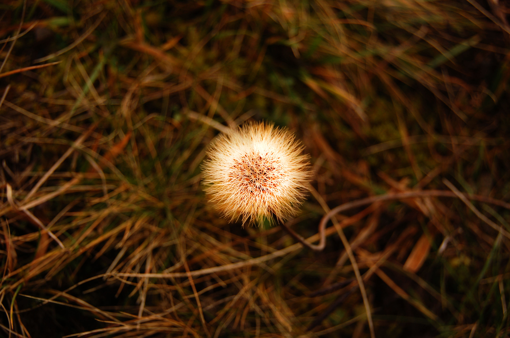
 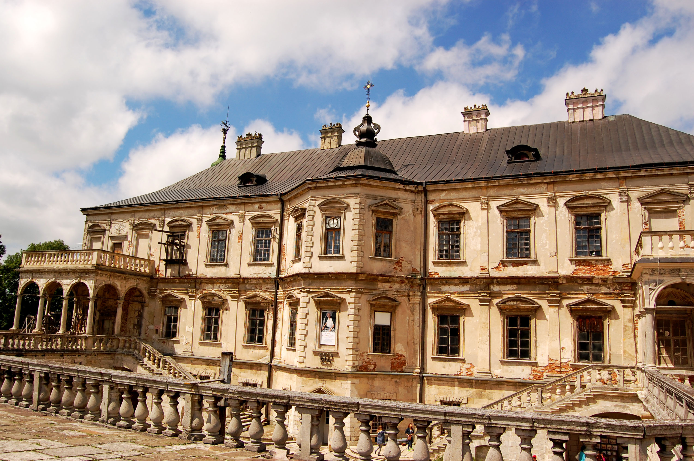
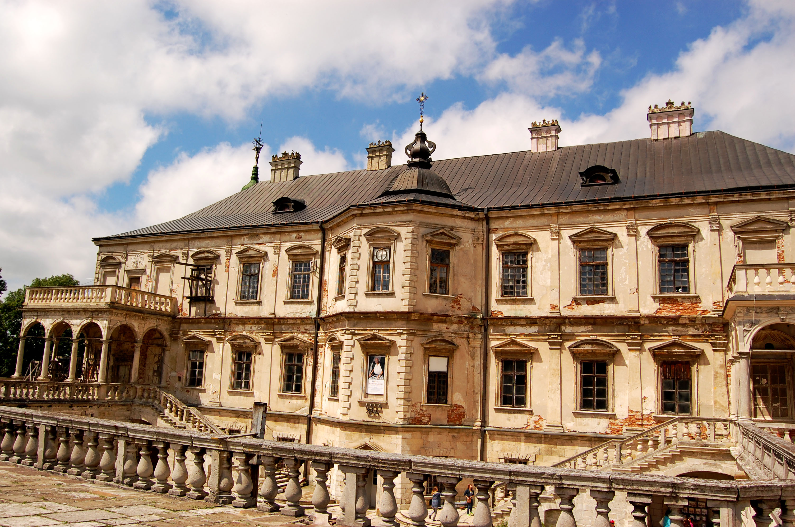
My Services
Love Story
-Previous communication
-Help in route planning
-The work of the photographer: 1-1,5 hours.
- Dispatch of finished material
Within 1 month
-Auto processing 30 photos
-The photo is taken to the disc
Price: 350 UAH
Kids
Previous communication
-Help in route planning
-The work of the photographer: 1-1,5 hours.
- Dispatch of finished material Within 1 month
-Auto processing 30 photos
-The photo is taken to the disc
Price: 350 UAH
Archirecture and Nature
Photos for the design of the house, workplace:
-Prior meeting and communication
Photographer's work:
Send the finished material to
Within 1 month
-Auto processing 30 photos
-The photo is taken to the disc
Price: 350 UAH
Wedding
-Prior meeting and communication
-Help in route planning
Photographer's work:
-Day of the wedding: from the morning of the bride
To the first dance (no more than 8 hours)
-Love-Story- pre-wedding or
After-wedding photography
(Duration 1-2 hours)
-Authorized processing of 50 photos
-Correction photo: 400 frames
-Flash with photos. Price: 5000
Flick Feed

 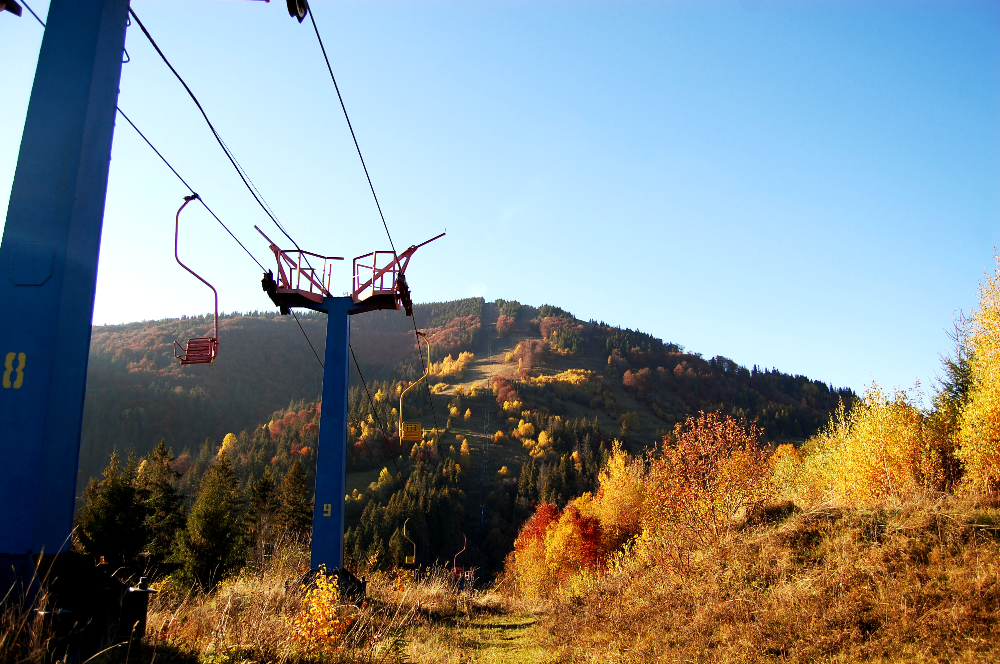
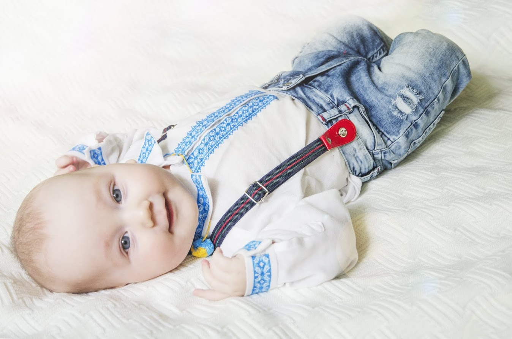
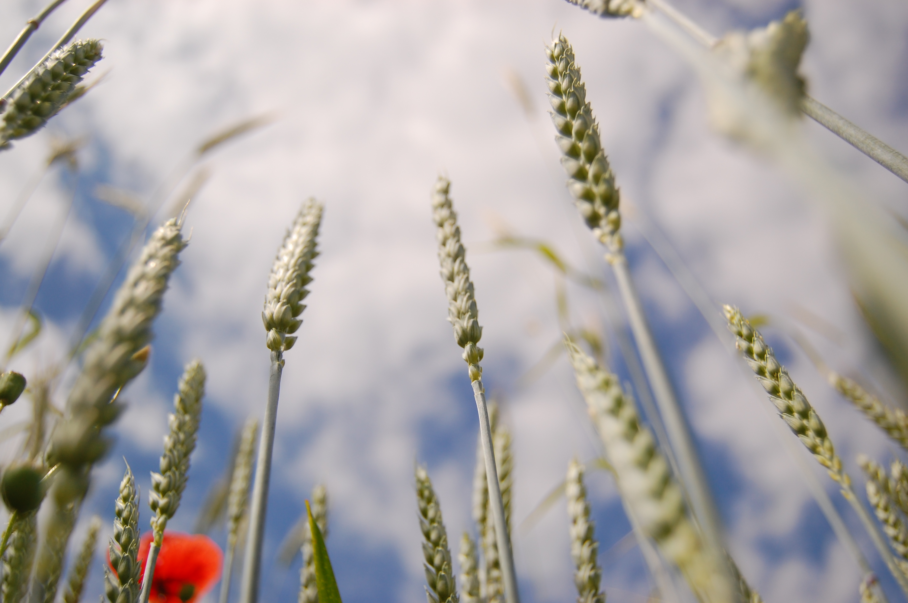
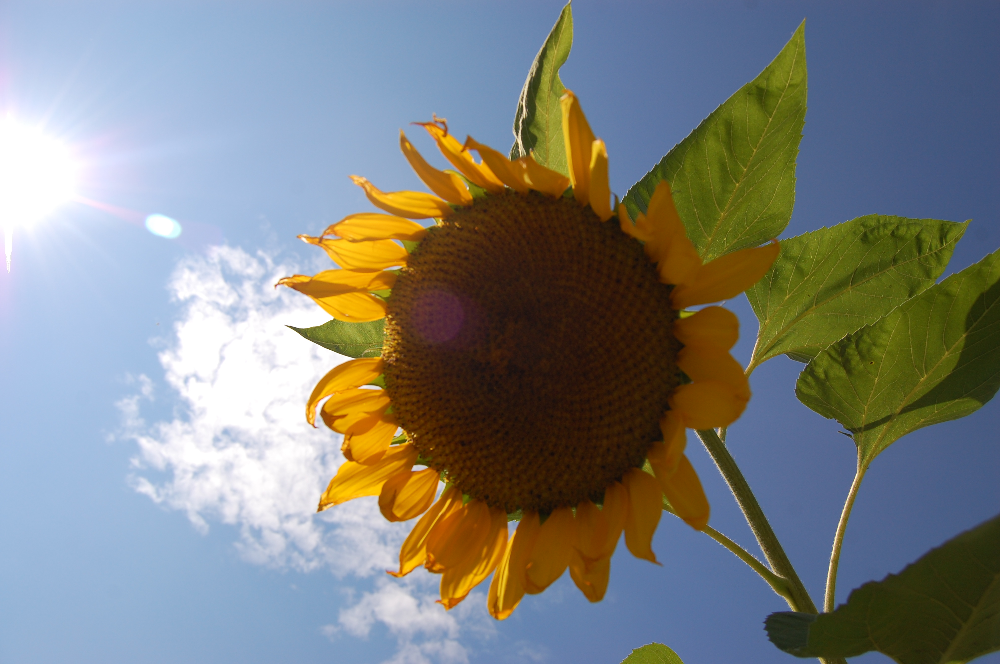
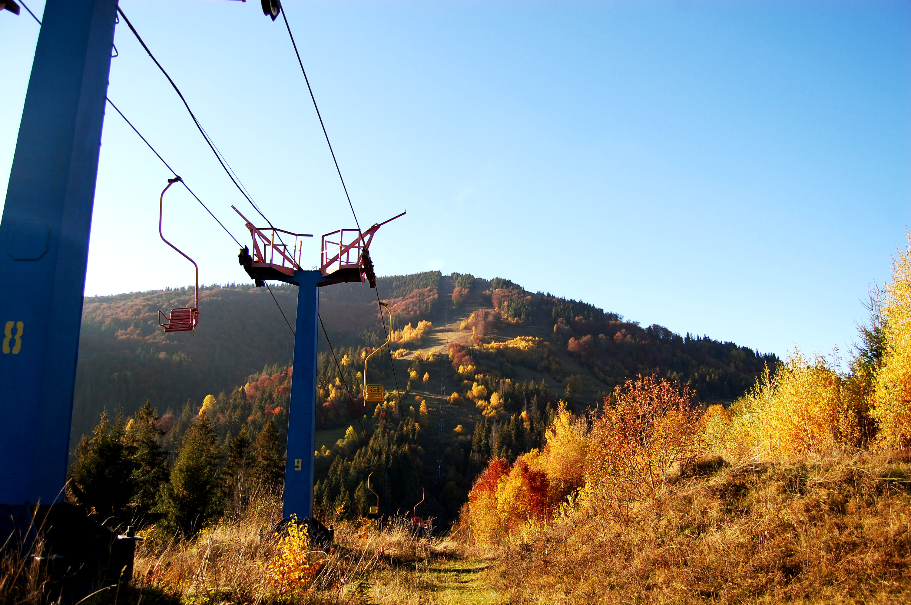
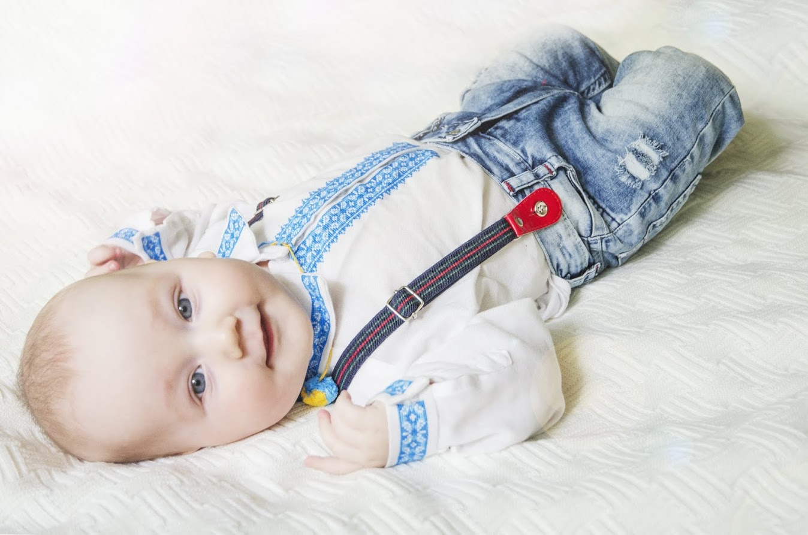
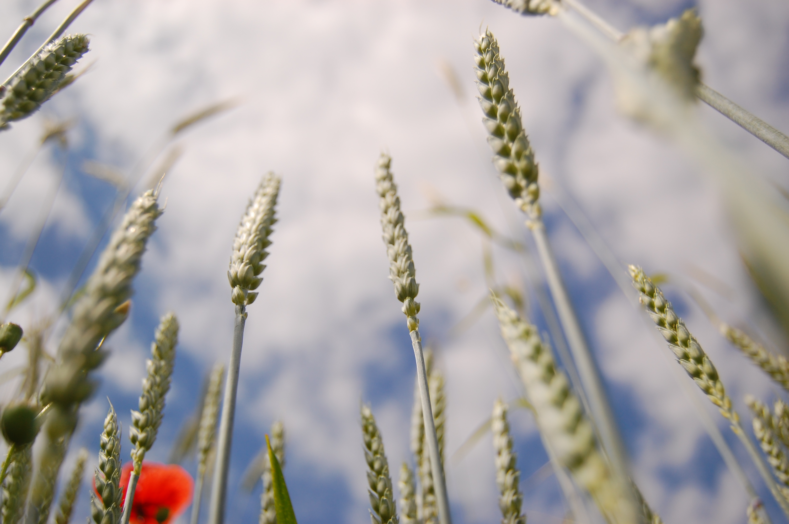
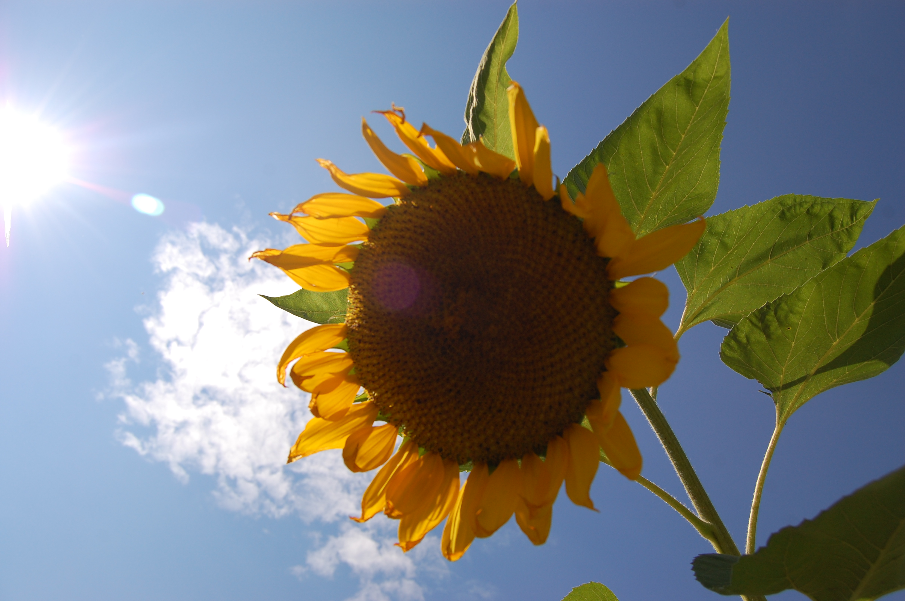